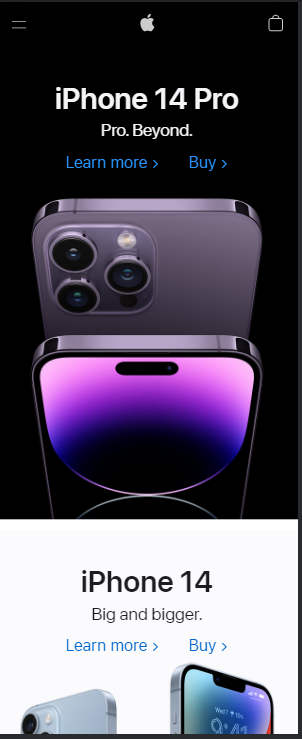

White Space
Apple
apple.com White Space is also known as negative space is the empty space that we see on a website. This can be handy is using slick, yet functional elements of a page. It can also reduce the amount of text that people will see at once. A good example of this is Apple's website. The use of negative space is well put and it looks professionally done.
Rule of Thirds
PlayStation
playstaion.comIf you are familiar with photography then you will be familiar with the rule of thirds. Think of a screen divided into thirds with a grid, so if you like grids a lot, then using Rule of Thirds is probably the best thing for you. A good example of a website using this is Playstion due to the fact that there are multiple pictures being used and it makes it easy on the eyes.
Hick's Law
YouTube
youtube.comSo Hick's law and Fitt's law are almost the same thing. I chose Hick's law because basically lets the user make a decision. For example, all of the videos that are displayed on YouTube make it so that the user can easily make the choice they want, and it makes it user-friendly as well.